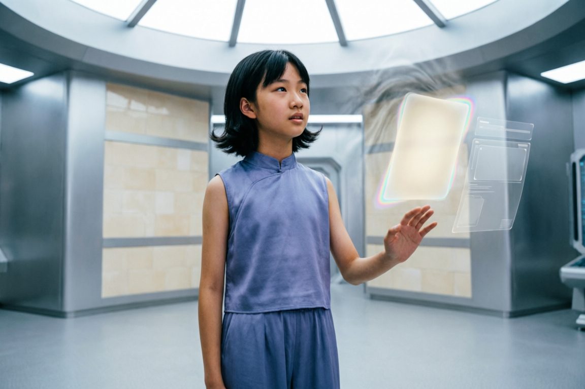

C-00
LOCKED
你（玩家视角）
未来湾固定小队新成员 / 第一人称身份锚点
- 人设
- 不是空白镜头，而是未来湾固定小队里最后要做判断的人，负责看、问、判断并承担后果。
- 使用方式
- 主要承担第一人称体验；只在镜面反射、身份识别卡或极少数锚点镜头中可视化。
这页现在要承担 chapter-01 的单一主入口：不仅给当前视频，还要把 `演员定妆 / 整集剧本 / 分镜脚本文字 / 当前资产` 串成一条能读懂整片的链路。顶部先看最新 assembled current，但往下必须能直接读到人物、剧本和逐拍分镜，不再只剩链接矩阵。
当前页面规则 顶部这条 `assembled current` 会持续保持最新，但它现在的真实状态仍是 `继续编辑 / PASS WITH NOTES`，不是已定稿。当前仍有 3 个必须继续跟进的问题：
这一屏固定只放当前最新的整章组装版。以后不管后面怎么继续补 clip、修音轨、改 shot list，最上面这个入口都只指向当前最新 assembled current，不再让用户先去猜哪条才是“最新版”。
这一页不再只给视频入口。chapter-01 当前核心可见角色、非人伙伴和长期转折角色，都必须在这里直接看到 `定妆照 + 姓名 + 角色职责 + 使用口径`。其中更严格的 canonical 归档仍以 `content/actors/actor-casting-dossier.html` 为准，这里展示的是当前资产页内可直接联动的主视觉版本。
当前口径 人物不是补充说明，而是孩子能不能看懂这集的前提。开头必须先知道：`我是谁`、`谁是固定小队`、`林澄是谁`、`谁在代表时间档案城的做法`、`谁在代表现实关系压力`。
未来湾固定小队新成员 / 第一人称身份锚点

高阶引路人 / 正式任务交付者

慢变量与感知力担当 / chapter-01 儿童核心演员

档案城说法代表 / 常驻灰度对手

证据与系统拆解担当

协同与回响台表达担当

现实关系压力角色

风名守人 / 中段转折角色

时间潮汐飞行器 / 可见转场伙伴
下面这部分直接把 `master-episode-script.md` 里真正用于讲完整集故事的正文挂回当前主资产页。它不是分镜表，而是孩子从进入未来湾到回航未来湾的连续剧体验主稿。
屏幕亮起时，不出现课程标题页，也不出现导览页。孩子第一眼看到的，是未来湾夜港正在换潮。海面像一层缓慢转动的冷光，港口上空悬着成百上千枚任务灯。大多数都安静、柔和，像夜里守秩序的星。只有最中央一枚灰银色信号忽然亮起，闪烁频率快得像在压住什么快要来不及的事。
你正站在任务台前。不是第一次误入未来，也不是被谁临时叫来帮忙，而是已经戴上了未来湾固定小队的权限环。权限环边缘微微发亮，正在等你确认这次正式任务。
阿潮从上空俯冲下来，机身尾光在港口划出一圈弧，一边减速一边播报：“灰银级任务到啦。新成员，先别把肩膀绷那么紧。” 它停在你头顶，补了一句：“第一次正式出发，紧张也正常。跟紧我就行。”
这时，不是只有守望者一个人站在任务台边。祁野已经把一块半透明数据板展开，几条任务前置信息被他迅速拽到半空。闻夏正在把回响刚整理出的简报压缩成一页，把最紧急的部分先推到上层。回响没有实体站位，而是以淡银色界面层贴在任务台边缘，实时记录、提示，却保持克制。
这里最重要的感觉不是“角色依次出场”，而是：这是一支已经在运转的队伍，而你是队里默认要接下责任的人。
守望者走到任务台中央，看向你，不做世界说明，只把一份灰银信号推到你面前：“从现在起，你就是未来湾固定小队的新成员。这项灰银任务，就交给你了。”
你点开任务封签。简报不先给一整页文字说明，而是连续弹出四段极短的争议现场切片：未落下签名的《最优人生路径确认书》、`匹配度 93%，默认归档准备中` 的系统提示、`距离午夜归档：05:59:12` 的倒计时，以及林澄在签字笔落下前忽然抬头望向高处异常风声回流的瞬间。
回响轻声补充：“地点：时间档案城。情况：林澄还没签字。系统判断，她有 93% 会被归进那条路。如果今晚没人拦，午夜后就会锁上。提醒：这次任务会记进未来湾任务记录。”
祁野说：“先看清楚，系统凭什么认定她只能走那条路。” 闻夏接上：“但别查太久。午夜一到，她就先被锁进去了。证据可以接着补，开口的地方得先抢下来。”
守望者最后只把权限环的确认层点亮：“从现在起，这不是旁观。是接任务。别急着替谁赢。先看清，这条人生是不是被漏掉了。”
接受任务后，不进入教学导览，而进入紧急入港航线。阿潮载着小队穿过未来湾外环，港口在身后迅速退开。出航段必须兑现三个信息：这不是你一个人出发，而是未来湾固定小队已经一起动身；下一站就是时间档案城；而且现在只能先拿到临时观察许可。
出航段结尾，阿潮冲破最后一层薄雾，时间档案城出现在眼前。回响忽然弹出新提示：`公开层路径数目与底层样本波动数不完全匹配。` 祁野迅速抬头，回响停了一瞬后回答：“意思是，这座城市现在展示给大家看的未来，可能并不是全部。”
你抵达时间档案城后，镜头不先做完整城市参观，而先让你被入场校验系统短暂拦住。林澄的争议档案正在进入归档流程，任何进入者都必须先完成最小入场确认，才能取得临时观察权限。
世界设定因此不再以导览方式出现，而是以“你必须先明白这些，否则你进不去”的方式出现。校验系统快速抛出三条入场提示：每位孩子在 12 岁前后收到《初始人生建议书》；高匹配路径会被摆在更前面；午夜归档后，锁定路径将在未来数年内优先生效。
只有完成这一步，未来湾固定小队的本次观察权限才被点亮。但系统没有把欢迎说得很热情，反而在权限通过时补上一条冷静提示：你方权限级别是 `外部观察介入`，允许动作是 `查看公开层、提交争议说明、申请回响台公开窗口`，限制动作则是 `调用底层母样本、重排公开权重、修改默认归档结果`。
紧接着，屏幕又跳出更令人不舒服的提示：`公开质疑剩余窗口：00:47:00`。这意味着时间档案城不只有门槛，还有自己的节奏；而这个节奏并不按你的方便运行。
随后镜头才给你一个短促而有压迫感的现场掠影：悬浮档案大厅、中央归档环、林澄面前悬停的确认书，以及一些正在有序接收建议书的普通居民。这一步不是带孩子参观，而是让孩子在进入冲突前明白，这里是一整座已经习惯由系统安排未来的城市。
守望者这时只说一句：“在这里，很多孩子不是先想好自己要成为什么样的人。是先收到一张建议书，再慢慢活成上面的样子。”
你进入悬浮档案大厅。镜头先从高处给出整体奇观，再迅速落到林澄和她面前的确认书上。大厅中的时间丝线像秩序化的雨从高处垂落，确认书悬在她和你之间，像一块马上就会落下的决定。
这一段里，孩子不是被动看视频到底，而是可以点开林澄档案、路径说明、锁定后果、序列员 07 和家属确认记录。视频、对白和界面信息交替出现，形成“我正在自己调查档案城现场”的感觉。
你进到大厅后，第一件事不是听谁讲道理，而是先看清三个人站在什么位置。中间是林澄，左后方是她父亲，右侧归档层边上是负责今晚归档流程的序列员 07。
林澄先看向你，再看了一眼还没签的确认书，低声问：“你也是来劝我今晚签字的吗？” 这句必须先让孩子听懂，她不是在闹脾气，而是正在被一群人催着做一个今晚就会生效的决定。
父亲说：“我不是逼她。我是怕她今天不签，以后吃的苦会更多。” 07 接着说明自己的位置：“我是序列员 07。今晚这份归档，我来盯。” 然后你们才去看调查层里的三个硬事实：系统已经给林澄排出了 `93%` 匹配的默认路径，家属支持记录里父亲已经提交支持意见，如果今晚申诉不成功，午夜一到这条路就会先锁定。
这时你或祁野发起 `申请查看底层波动对照层`。07 没有暴躁，也没有回避，而是当场完成一次合法反制。他抬手调出一层很薄的归档界面，说：“公开层你们能看。底层母样本，现在不能调。” 大厅上方随即亮起提示：未来湾申请驳回，公开质疑剩余窗口调整为 `00:29:00`。
这一步很重要。因为 07 不只是说得有道理，他还真的先赢走了一段时间。闻夏立刻意识到局势变化，低声对你说：“他不是赶我们走。他是要我们来不及开口。”
从悬浮档案大厅出来后，不直接跳进概率长廊。镜头必须先落进家属等待区。这里没有大厅那种高处垂落的宏大秩序感，只有被设计得很平静的安抚气氛：签字笔底座安静停在桌面上，安抚屏用几乎体贴的语气循环提示“高匹配路径通常会带来更低波动的人生结果”。
这一段必须让孩子第一次明确感到，真正刺人的不只是冰冷系统。很多时候，更难反抗的是那种看起来很温柔、很替你着想、甚至好像真的在减少风险的话。
林澄父亲在这里要真正成立为现实的人。他对你说：“你们看见的，是她今晚不肯签。我看见的，是她错过今天，后面每一步都得自己硬扛。” 接着又补一句：“我不是想把她塞进别人写好的路里。我是怕她以后想回头，都没力气了。”
然后镜头切到林澄。她在这个安静空间里反而更清楚地说出一句真正属于她自己的话：“要是连我最怕丢掉的东西，都先被别人写好了。那还怎么算我的人生。” 这句话先把概率长廊接下来要展示的核心问题钉住：系统和父亲都想给她更稳的人生，但她正在失去的，也许正是那个还没被他们真正看见的自己。
你进入概率长廊。这里的视频感、界面感和互动感第一次真正浑然一体。三条公开路径同时存在，但孩子可以一条条看进去。每条路径不只是文字标签，而是带未来片段的小窗。
金色路径强、稳、被认可，像一条会被很多大人放心点头的人生。银色路径可控、折中、低波动，像一条不容易出错的人生。灰蓝路径不确定、回报一般、很普通，却也很真实，像系统勉强愿意保留的次级选择。
与此同时，荒诞微未来片段作为彩蛋弹出：林澄给风起奇怪名字、被会学舌的风铃跟着跑、发明雨前气味词典。这些小片段会带来笑意，也悄悄铺垫出一件事：有些真正重要的能力，一开始看起来很怪。
更关键的是，系统把三条公开路径做得确实很有吸引力。孩子必须能真切感觉到为什么大人会放心、为什么时间档案城会先推这些路、为什么“高概率、高效率、可复制”很容易被误认成“更值得被看见”。
闻夏在这里提前开始做她的工作：“证据就算还没齐，也得先让它认一件事。不能因为它不想挂出来，就当这条路从来没有。” 祁野则在一旁快速比对层级结构，皱眉说：“这三条像摆在最前面的。不像底下全部的路。”
林澄在看到其中一段路径演示时明显不适，因为那段演示把她所有关于风、气味、慢变化的感知，都压缩成了一行很漂亮却很扁平的评语：`高环境敏感度，可转译为系统规划优势。` 她盯着那行字看了两秒，说：“它把我听见的东西，改成了它会写的话。”
异常风声再次出现。这是本集从档案城剧情正式进入未来悬疑冒险的时刻。你循着风声进入暗层接口。这里的交互明显不同于前面，更轻悬疑，也更靠近小冒险。
风声幽灵不是恐怖物，而是一段调皮又稀有的未来痕迹。孩子需要追随它、对齐残缺风声轨迹、拼接被压下去的样本。但关键强化点在于，风声婆婆还没正式出声前，林澄先停住了。她轻声说：“这声音我听过。我小时候听过一次。”
这样第四路径就不是剧情临时送来的答案，而像是她早就隐约生活在其中，只是从来没人肯替它命名。当第四色路径终于被解锁时，画面第一次出现第四色。不是炸裂式特效，而是像一段被压住很久的光，终于被允许呼吸。
第四路径显示：`风暴听译者`。紧接着跳出的不是“隐藏真相已找到”，而是一组让人立刻安静下来的判定：文明预警潜势存在、样本可信度不足、训练周期极长、稳定复制性极低、公开层展示等级暂不开放。
孩子此时意识到，真正的问题不是林澄任不任性，也不是系统有没有藏着一条简单正确答案，而是：当一种未来太稀有、太慢、太难被证明时，时间档案城应不应该先让人们看见它。
之后体验进入沉默练习室。风声婆婆没有长篇讲道理，而是让你和林澄在旧录音贝壳、手写日志、风名标签和过时训练记录之间短暂停留。她只说一句：“有些本事，小的时候看着没什么用。可真到起风的时候，少了它还真不行。”
第四路径被发现后，局势没有立刻转向乐观。因为时间已经不够了。距离午夜归档只剩不到半小时，而公开层质疑要求提交一份可追溯、可验证、具备原始链路的证据包。
祁野正在拼命校对路径生成底表。闻夏已经开始压缩陈词骨架，准备只争一个最低限度也必须拿到的结果：先把第四路径从“不存在”改成“允许被看见”。林澄却越来越安静，因为她开始担心如果最后真的把它公开出来，自己会不会只是被他们摆出来看。
这时回响提出建议：“如果你点头，我能调历史相似样本，帮你更快整理出来。会快一点，也会没那么原样。” 这里必须让玩家作出一个真正会反噬剧情的选择，而且这场错误必须是有理由的错。
第一集当前 canonical 主线固定为：玩家选择授权回响加速整理。不是因为这就是正确答案，而是因为这一集必须让孩子亲眼看见，AI 协作为什么会显得诱人，以及“为了救人先快一点”为什么会这么像一个合理决定。
于是你点下授权。新的证据包会很快成形，界面上甚至会让人一瞬间产生“太好了，赶上了”的感觉。但就在进入公开质疑前，序列员 07 当场指出：“这份证据里用了模型推断，不能算原样证据。” 他没有羞辱人，也没有把回响妖魔化，只是冷静地按归档流程冻结了其中一部分权限。
大厅上方立刻亮起提示：`未来湾临时质疑权限：部分冻结`，`冻结原因：原始证据链污染风险`。这时剧情才真正疼起来。因为这不是别人故意害的，而是你为了赶时间，做了一个现实里很多人都会做的决定：让更快的 AI 先帮我整理，以为“差不多”已经够了，结果最关键的时候，它不能替你承担真实性和责任。
守望者直到这时才开口：“这才是真任务。不是把东西找出来就算完。是弄疼了，你们还敢不敢接着扛。”
你们赶到自由回响台时，城市上方的归档环已经进入最后一轮预热。整个回响台像悬在夜空中的一圈透明阶梯，城市所有可公开接入的声音都会在这里被放大、留痕、归档。它不是一个漂亮的表达页面，而是一个会留下后果的地方。
序列员 07 已经等在那里。他没有否认第四路径的存在，这会比“反派嘴硬”更高级，也更难对付。他只是平静地把问题重新推回你们面前：“是，第四条路在。可在，不等于现在就要挂出去。样本少，练得久，还不稳。现在就把它放上公开层，后面乱起来，谁来接？时间档案城这样排，不是为了害谁。是为了别让大多数人，一上来就把自己压到最难的路上。”
回响台把最后一次选择层亮出来：若申请启动“少数未来临时开放通道”，需由具备跨层观察资格的责任方完成签署。签署后果是，如果申请成立，责任方所在团队进入重点观察名单；若后续观察失败，该团队部分跨层权限将被限缩。这不是“辩赢了就行”，而是你们敢不敢为这个还无法被充分证明的未来承担后果。
第一集这里默认走 `human_vs_agent`。五步动作固定为：祁野先卡证据底线；闻夏帮你把立场整理成全城都能听懂的话；07 抛出档案城追问；林澄确认她真正争取的是什么；最后由玩家决定是否签署。回响不能替你签，闻夏不能替你签，守望者也不能再替你签，你才是这支队伍的最后责任判断者。
关键对白要让档案城和人都成立。07 说：“时间档案城这样排，不是为了害谁。是为了别让大多数人，一上来就把自己压到最难的路上。” 祁野说：“我承认，我们刚才走急了。快，不等于真。” 闻夏说：“先让大家看见，不等于逼大家都去走。先给它留个位置，也不等于现在就把整座城都改了。” 林澄说：“我不是要你们现在就信，我以后一定有多厉害。我只是还没长成，就不想先被删掉。”
当玩家选择签署，界面不要做成热血胜利动画。更好的方式是：权限环发亮，签署线一笔一笔落下，回响台安静半秒，整座城市上空忽然多出一条此前从未在公开层出现过的第四色光带。然后系统播报：`少数未来临时开放通道，启动。路径编号：TAC-04。路径名：风暴听译者。开放状态：限时公开 / 观察期接入 / 不列入常规推荐。`
这意味着这不是理想化大胜利。不是第四路径赢了，而是它被看见了、被保留了，但仍然困难，仍然不稳定，仍然需要未来去证明。系统同时补上一条冷静提示：未来湾固定小队已列入重点观察名单。林澄这时第一次真正抬头看向你，不是像看一个来帮她的人，而是像看一个会和她一起承担后果的人。她更适合说：“原来真的会有人，为一条还说不准的路，把自己的权限也押上去。”
离开时间档案城时，城市没有像任务完成一样热闹发光。恰恰相反，那条新被公开的第四色光带仍悬在夜空里，细、弱、并不稳定，像一条刚被允许存在的未来呼吸。阿潮把你们带回未来湾。这段回航不需要太多话，重要的是让孩子感到：事情没有被彻底解决，但一条原本会消失的可能性，被硬生生留到了明天。
回到夜港后，守望者没有先复盘，也没有立刻上价值。他只是把今晚的任务归档进未来湾主档案墙。一块新的光牌慢慢浮现：`裂口档案 01：时间档案城`、`裂口类型：低概率未来自动降权`、`风险倾向：成长选择被提前代做`。
这时回响开始自动比对跨层异常样本。港口上空亮起一连串模糊但相似的波纹。不是同一个城市，不是同一种做法，却呈现出近似趋势：有的世界在替孩子筛掉太慢的记忆，有的世界在替人提前修整不够高效的关系，有的世界在替创作删除太不稳定的尝试。
闻夏先开口：“这不只是档案城这里的事。” 祁野接上：“别的地方也有。样子不一样，方向却很像。” 守望者看着那些波纹，终于第一次把那条长线阴影说出来：“最麻烦的，不是有人硬按着你走。是有人一直很体贴地替你看、替你挑、替你想、替你定。时间一长，你会忘了，路本来该自己选。”
林澄这时没有马上离开。她看着档案墙上的 `裂口档案 01`，没有先说谢谢，而是把一枚自己写过风名的标签轻轻放到任务台边缘：“我还没想好，以后到底走不走那条路。可你们以后要是还去看别的裂口，我想先跟一段。” 这一步让林澄从本集引爆点正式升级成未来湾长期伙伴起点。
回响则向你推送新提醒：未来湾固定小队任务记录已更新，你在第一次正式任务里，为一条还说不准的未来签了保留，后续任务将默认识别你为敢扛后果的决策者。阿潮晃着尾光接了一句：“我刚做了个不太安稳的预测。我们多半还得再跑几趟。”
数字导师不是从黑底里突然冒出来点评你。更好的方式是：未来湾回航口的光慢慢收暗，档案墙和港口夜潮的余光还在，数字导师像一层被调低亮度的稳定投影，从回航口旁边的引导界面里缓缓出现。
它不是老师腔，更像这个世界里专门负责把一次高压任务安静放回你手里的引导角色。它先看向你，停半秒，确认你还留在故事里，然后才说：“今晚，你没有证明哪条路一定对。你做的，是另一件更难的事。你替一条还说不准的路，多留了一点时间。”
它不会立刻升华成大道理，而是继续把问题留在你手里：“以后，你还会一次次遇到这种时候。快的答案，常常会先到。而且它听起来，总像很有道理。可哪些路值不值得再往前留一步，最后还是得有人自己来定。”
然后数字导师只留下一个极轻的问题：`如果下一次，被提前删掉的是一段记忆、一种关系，或者一个长得很慢的本事，你还愿不愿意替它多留一道门？` 界面下方只保留两个克制的 world-in 动作：`归档今晚判断` 与 `继续查看裂口档案`。最后它说：“回航完成。裂口档案 01 已立案。你可以先休息，也可以继续看向下一道裂口。”
这部分直接把 `storyboard-script.md` 的 `全片 Beat 合同总表` 折回到当前资产页里。它不是缩略目录，而是逐拍文字口径：每个 beat 都明确 `演员 / 环境 / 对白 / 旁白 / 环境音效 / Beat 职责`。如果你要校对“剧本有没有真正拆到分镜”，先看这里，再往下看 current 资产矩阵。
| Beat | 演员 | 环境 | 对白 | 旁白 | 环境音效 | Beat 职责 | | --- | --- | --- | --- | --- | --- | --- | | `CH01-P01-S01` | 玩家主位（POV） | 未来湾任务码头 | 无 | 无 | 流光海低频、时间丝线轻颤 | 先确认“我已在场，而且本来就属于这里” | | `CH01-P01-S02` | 玩家主位（POV） | 未来湾任务台中央 | 无 | 回响系统层通报灰银请求 | 信号脉冲、台面通电、夜港底噪 | 把“任务真的压到眼前”钉住 | | `CH01-P01-S03` | 阿潮、玩家主位（POV） | 未来湾任务台上空 | 阿潮播报集结与任务对象 | 无 | 俯冲风切、机身减速、尾光扫场 | 用阿潮把紧急感和世界趣味接入现场 | | `CH01-P01-S04` | 祁野、闻夏、回响、玩家主位（POV） | 未来湾任务台工作区 | 祁野一句、闻夏一句 | 无 | 数据板拖拽声、界面流动声 | 让固定小队已经在工作，而我处在责任中心 | | `CH01-P01-S05` | 守望者、玩家主位 | 任务台中央 | 守望者正式交班 | 无 | 灰银封签停稳、台面轻振 | 把任务交接从“说明”变成“正式授权” | | `CH01-P01-S06` | 玩家主位、回响系统层、林澄切片 | 任务封签展开层 | 无真人长对白 | 回响说明任务地点、性质、失败后果 | UI 展层、切片切换、倒计时滴答 | 先把林澄争议、93%、午夜锁定和队伍职责交代清楚 | | `CH01-P01-S07` | 守望者、阿潮、队伍、玩家主位 | 启航航线 / 任务码头离场位 | 守望者压一句“这是责任任务” | 无 | 航线点亮、阿潮牵引声、港口远潮 | 把点击接受变成真正出发，并把临时观察许可带进下一段 |
| Beat | 演员 | 环境 | 对白 | 旁白 | 环境音效 | Beat 职责 | | --- | --- | --- | --- | --- | --- | --- | | `CH01-P02-S01` | 玩家主位（POV）、阿潮 | 紧急入港航线 / 城市外缘 | 无 | 守望者或系统短线说明“先领临时观察许可” | 低空掠行、城市门限嗡鸣 | 先把“到城了，但还没真正进场”成立 | | `CH01-P02-S02` | 玩家主位（POV）、校验系统 | 入港校验层 | 无 | 系统依次抛出三条规则 | 校验提示音、权限扫描声 | 用门槛而不是导览讲清城市规则 | | `CH01-P02-S03` | 玩家主位（POV）、校验系统 | 限制动作提示层 | 无 | 系统播报允许动作与限制动作 | 倒计时收紧、权限层收束 | 让孩子感到“系统允许进入，但不欢迎改结果” | | `CH01-P02-S04` | 守望者、玩家主位（POV） | 悬浮档案大厅入口桥 | 守望者一句人话解释“先得建议，再学会成为建议里的人” | 无 | 归档环远噪、门限开启声 | 从门槛顺势带入冲突现场，不做城市观光片 |
| Beat | 演员 | 环境 | 对白 | 旁白 | 环境音效 | Beat 职责 | | --- | --- | --- | --- | --- | --- | --- | | `CH01-P03-S01` | 林澄、父亲、序列员 07 | 悬浮档案大厅全景 | 无 | 无 | 高空间混响、时间丝线落声 | 第一眼讲清谁站中间、谁在左后、谁在右侧 | | `CH01-P03-S02` | 林澄、玩家主位（POV） | 确认台前近场 | 林澄：“你也是来劝我今晚签字的吗？” | 无 | 确认书轻振、近距离空气感 | 先把林澄写成正在被催着做决定的孩子 | | `CH01-P03-S03` | 林澄父亲、序列员 07、林澄 | 同一大厅关系位 | 父亲一句、07 一句 | 无 | 人声压低、规则层细响 | 同时立起家属压力和归档压力 | | `CH01-P03-S04` | 林澄、玩家主位（POV） | 调查层展开位 | 无长对白 | 无 | 档案卡展开、UI 翻层、倒计时常驻 | 把 `93% / 家属支持 / 午夜锁定` 三件事实摊开 | | `CH01-P03-S05` | 序列员 07 | 大厅规则层 | 07：“公开层你们可以看。底层母样本，现在不能调。” | 无 | 规则层弹出、权限收紧声 | 让 07 合法赢走一小段时间窗口 | | `CH01-P03-S06` | 闻夏、玩家主位（POV） | 驳回提示仍在场的大厅 | 闻夏两句短线 | 系统显示 `驳回 / 00:29:00` | 驳回提示音、空间压强更紧 | 把档案城打击和团队判断压成同一拍 | | `CH01-P03-S07` | 礼仪辅助器（系统层） | 大厅边缘提示层 | 无 | 礼仪辅助器短促提示 | 极轻电子提示音 | 保留档案城润滑层的不适感，但不抢主冲突 |
| Beat | 演员 | 环境 | 对白 | 旁白 | 环境音效 | Beat 职责 | | --- | --- | --- | --- | --- | --- | --- | | `CH01-P04-S01` | 玩家主位（POV） | 家属等待区入口 | 无 | 无 | 门限气压变化、远处归档噪声 | 把大厅冲突落进更贴近现实的等待区 | | `CH01-P04-S02` | 玩家主位（POV） | 签字笔底座与安抚屏前 | 无 | 无 | 安抚屏柔声、签字笔待命提示 | 让“温柔包装的压力”先被看见 | | `CH01-P04-S03` | 林澄父亲、玩家主位（POV） | 父亲对谈位 | 父亲短线说明“不是逼，是怕更难改” | 无 | 等待区低噪、安抚屏轻闪 | 先让保护语言成立，再让它变得有压迫感 | | `CH01-P04-S04` | 林澄父亲 | 父亲近景 speaking-ready 位 | 父亲近景补句 | 无 | 同场静压、呼吸近感 | 把父亲从背景角色升级成可辨识压力面 | | `CH01-P04-S05` | 林澄 | 林澄近景 speaking-ready 位 | 林澄回应“这不是我的人生”相关短线 | 无 | 等待区静音、细小风声 | 让林澄从被争论对象转成主动说出自己处境的人 |
| Beat | 演员 | 环境 | 对白 | 旁白 | 环境音效 | Beat 职责 | | --- | --- | --- | --- | --- | --- | --- | | `CH01-P05-S01` | 玩家主位（POV）、林澄 | 概率长廊入口 / 三路径初显 | 无 | 无 | 长廊风声、路径光层启动 | 先让三条公开路径的秩序感成立 | | `CH01-P05-S02` | 玩家主位（POV）、祁野、闻夏、林澄 | 路径比较节点 | 闻夏、祁野各有短线 | 无 | 路径切换、价值层滑动 | 让孩子比较系统最看重什么，而不是只看漂亮未来片段 | | `CH01-P05-S03` | 林澄、玩家主位（POV） | 彩蛋微未来与价值压缩层 | 林澄一句关于“被写成它自己的语言” | 无 | 荒诞微未来声纹、轻笑意后收紧 | 让公开路径真的诱人，同时感到被压扁的不适 | | `CH01-P05-S04` | 林澄、玩家主位（POV） | 长廊异常风声反应位 | 林澄或回响短促反应 | 无 | 异常风回流、路径余光颤动 | 把暗层线索从背景拉到前台 |
| Beat | 演员 | 环境 | 对白 | 旁白 | 环境音效 | Beat 职责 | | --- | --- | --- | --- | --- | --- | --- | | `CH01-P06-S01` | 玩家主位（POV）、林澄 | 暗层接口入口 | 无 | 无 | 通道低鸣、风声牵引 | 把概率长廊自然推进到暗层入口 | | `CH01-P06-S02` | 玩家主位（POV） | 波形谜题 scene-state | 无 | 回响克制提示可选操作 | 波形拼接、残缺回声 | 让发现过程变成可参与的小冒险 | | `CH01-P06-S03` | 林澄、玩家主位（POV） | 第四路径 reveal 位 | 林澄认出“这不是陌生声音”相关短线 | 无 | 第四色低频浮现、暗层呼吸 | 让第四色路径从异常变成文明选择问题 | | `CH01-P06-S04` | 风声婆婆（声音或记录）、玩家主位（POV）、林澄 | 风暴听译者记录界面 | 风声婆婆一句生命证词 | 旧录音残响 | 录音颗粒、旧介质摩擦声 | 把隐藏路径从“找到答案”转成“看见困难可能性” |
| Beat | 演员 | 环境 | 对白 | 旁白 | 环境音效 | Beat 职责 | | --- | --- | --- | --- | --- | --- | --- | | `CH01-P07-S01` | 玩家主位（POV）、林澄 | 沉默练习室入口 | 无 | 无 | 空房间风声、远处旧器材鸣 | 先让节奏真正慢下来 | | `CH01-P07-S02` | 玩家主位（POV） | 旧练习痕迹区 | 无 | 无 | 纸页、吊牌、旧物轻撞 | 让“慢成长”先通过物证被感到 | | `CH01-P07-S03` | 林澄、玩家主位（POV） | 风声载体近场 | 林澄极短反应 | 无 | 载体回鸣、细碎风名 | 让林澄和这条路径的先天连接成立 | | `CH01-P07-S04` | 风声婆婆（声音）、玩家主位（POV）、林澄 | 风名标签与监听位 | 风声婆婆一句“有些本事，小的时候看着没什么用” | 无 | 风标签轻碰、旧录音残响 | 把“慢慢长出来的本事”从一句判断变成生命经验 |
| Beat | 演员 | 环境 | 对白 | 旁白 | 环境音效 | Beat 职责 | | --- | --- | --- | --- | --- | --- | --- | | `CH01-P08-S01` | 玩家主位（POV）、序列员 07 | 规则投影室 establishing | 无 | 无 | 冷静投影机噪、空间更干 | 把中段从发现情绪带回档案城正面战场 | | `CH01-P08-S02` | 玩家主位（POV）、序列员 07 | 模型围绕展开位 | 07 解释展示位、失败率、这座城能不能先用上 | 无 | 模型旋转、层级切换声 | 让 07 的档案城说法真正成立，而不是单薄反方 | | `CH01-P08-S03` | 序列员 07 | 07 近景 stance 位 | 07 抛出“为什么例外值得留在公开层里”前置问题 | 无 | 投影层收紧、近距空间压强 | 为后面的回响台追问做预热 | | `CH01-P08-S04` | 玩家主位（POV）、林澄、序列员 07 | 模型收束后的出口位 | 无或极短回应 | 系统保持倒计时常驻 | 模型熄灭、倒计时压近 | 把规则解释自然推向下一段证据与权限危机 |
| Beat | 演员 | 环境 | 对白 | 旁白 | 环境音效 | Beat 职责 | | --- | --- | --- | --- | --- | --- | --- | | `CH01-P09-S01` | 回响、玩家主位（POV） | 证据授权位 | 回响提出“可加速整理，但会降低原始性” | 无 | 权限授权声、界面上扬感 | 让 AI 边界以诱人的便利形式进入剧情 | | `CH01-P09-S02` | 玩家主位（POV）、祁野、闻夏 | 证据包成形位 | 队伍短促判断 | 无 | 证据包快速压缩、倒计时更紧 | 把“太好了赶上了”的错觉先给出来 | | `CH01-P09-S03` | 序列员 07、玩家主位（POV） | 冻结提示位 | 07 指出“模型推出来的不能算原样证据” | 系统播报部分冻结 | 冻结警报、权限回收声 | 让档案城反噬真正落地 | | `CH01-P09-S04` | 祁野、闻夏、玩家主位（POV） | 团队争执位 | 祁野与闻夏各一句 | 无 | 人声压低、空间骤冷 | 把“要救人”和“要保真”之间的裂缝打开 | | `CH01-P09-S05` | 林澄、守望者、玩家主位（POV） | 分裂后的静压位 | 林澄一句、守望者一句 | 无 | 冻结余响、呼吸空拍 | 把错误推进到真正的承担任务里 |
| Beat | 演员 | 环境 | 对白 | 旁白 | 环境音效 | Beat 职责 | | --- | --- | --- | --- | --- | --- | --- | | `CH01-P10-S01` | 玩家主位（POV）、队伍、序列员 07 | 自由回响台 establishing | 无 | 无 | 城市远响、回响台启用声 | 把高潮地点先确立为“会留下后果的地方” | | `CH01-P10-S02` | 祁野、闻夏、玩家主位（POV） | 证据与立场整理位 | 祁野卡证据底线，闻夏整理公共说法 | 无 | 资料收束、城市底噪稳定 | 让队伍先把能说什么、不能说什么锁清 | | `CH01-P10-S03` | 序列员 07 | 全城可见对手位 | 07 抛出档案城追问 | 无 | 全城扩声、城市回响 | 让 07 在立场上真正难对付 | | `CH01-P10-S04` | 玩家主位、林澄、回响、守望者 | 签署前立场位 | 玩家表达、林澄确认争什么、回响声明不能代签、守望者交回判断权 | 无 | 半秒静场、权限环轻鸣 | 把高潮从表达推到“是否承担后果” |
| Beat | 演员 | 环境 | 对白 | 旁白 | 环境音效 | Beat 职责 | | --- | --- | --- | --- | --- | --- | --- | | `CH01-P11-S01` | 玩家主位（POV） | 少数未来临时开放通道 / 最终确认层 | 无 | 系统说明签署后果 | 倒计时逼近、权限环待签声 | 让签署不是热血按钮，而是真后果动作 | | `CH01-P11-S02` | 林澄、玩家主位 | 确认层后果近景 | 林澄最终短线 | 无 | 静场后轻风、光带初现 | 把“被看见”落回具体人生 | | `CH01-P11-S03` | 玩家主位（POV） | 申请状态与开放通道公告层 | 无 | 系统播报 `TAC-04` 与观察名单 | 通道播报、城市共振 | 让结果成立为“被保留、但仍困难”的档案城事实 | | `CH01-P11-S04` | 队伍、林澄、守望者、阿潮 | 未来湾回航 / 裂口档案墙 | 林澄、闻夏、祁野、守望者、阿潮各有极短收束线 | 无 | 回航风声、档案墙亮起、港口夜潮 | 把单集结果接成整季裂口与长期伙伴关系 |
| Beat | 演员 | 环境 | 对白 | 旁白 | 环境音效 | Beat 职责 | | --- | --- | --- | --- | --- | --- | --- | | `CH01-P12-S01` | 数字导师 | 课后数字导师空间 | 数字导师总结短线 | 无 | 安静回航尾音、柔和提示音 | 只在课后收束，不把孩子拉回课堂语气 |
使用说明 这张表按 `P01-P12` workflow 顺序列出当前分镜资产。每一段都给出：文字入口、代表图片、当前视频、当前状态。当前没有任何一段被标成“已定稿”；凡是 `PASS WITH NOTES` 或仍在回修的，都统一写成 `审片中` 或 `继续编辑`。
| Part | 文字 | 图片 | 视频 | 状态 |
|---|---|---|---|---|
| P01 | 未来湾任务码头 / 灰银任务交班 | 代表图 | 当前视频 | 审片中 |
| P02 | 紧急入港校验 / 档案大厅入口 | 见本段图像与 UI | 当前视频 | 审片中 |
| P03 | 悬浮档案大厅 / 林澄发问 | 代表图 | 当前视频 | 审片中 |
| P04 | 等待区与父亲 / 林澄承压 | 代表图 | 当前视频 | 继续编辑 |
| P05 | 概率长廊 / 路径比较 | 代表图 | 当前视频 | 审片中 |
| P06 | 暗层接口 / 第四路径显形 | 代表图 | 当前视频 | 审片中 |
| P07 | 静室与旧练习痕迹 | 代表图 | 当前视频 | 审片中 |
| P08 | 规则投影室 / 序列员 07 立场 | 代表图 | 当前视频 | 审片中 |
| P09 | 授权诱惑 / 证据冻结 / 团队分裂 | 代表图 | 当前视频 | 审片中 |
| P10 | 自由回响台辩论 / 公开承担 | 代表图 | 当前视频 | 审片中 |
| P11 | 午夜前选择 / 回航后果 | 代表图 | 当前视频 | 审片中 |
| P12 | 数字导师收束 / world-in 问题卡 | 代表图 | 当前视频 | 审片中 |
这不是“几个未来角色吵一架”的故事，而是一个非常具体的倒计时任务：在午夜归档前的最后几小时，未来湾固定小队接到正式灰银任务，要赶去时间档案城，判断 `12 岁女孩林澄` 是否真的应该签下那份《最优人生路径确认书》。
核心不是“要不要反抗系统”，而是：如果一个系统能高精度预测你最容易成功的人生，你还有没有权利去争取那条更难、但更像你自己的未来。
如果你刚才听到“先别急着站谁那边”很莫名其妙，问题不在你，而在当前开场视频没有先把前置身份讲清。这页现在先把这句翻译成人话：
`祁野的意思是：别先用情绪判断“林澄一定对 / 系统一定错”，先查 93% 是怎么得出来的。`
1. 先读上面的“先认人”
先把角色身份和这一集的任务搞清楚，再进视频，不然开头几句对白会天然像黑话。
2. 不要第一次就点 `master current`
这条还是内部审片入口，不是新用户入口。它现在仍有身份交代不足、粗剪感和局部噪音问题。
3. 先看 `P03` 和 `P04`
`P03` 能最快看懂“林澄是谁、07 是谁、为什么要争”；`P04` 能看懂“父亲为什么也站在系统那边”。
4. 最后再回头看整章粗剪
等你知道人物关系以后，再看 `master` 或 `story spine`，才是在审节奏，而不是在猜人物身份。
这条 `current master` 现在不能再被写成“默认先看”。它仍然只是 chapter-01 的统一审片入口，适合内部团队快速看节奏，不适合第一次接触这集的人。你刚才指出的“身份看不懂、对白像黑话、画面像照片晃动、后面有噪音”这些问题，确实还会在这里暴露出来。
主角阵列 已收束为你（玩家视角）、林澄、祁野、闻夏、回响、档案守望者、阿潮，以及档案城对手序列员 07。
当前稳定母图 为 `S-01 / S-02 / S-04 / S-06 / S-07 / S-09 / S-11`，足以支撑 chapter-01 的开场、档案城压力、家庭等待区冲突、概率长廊奇观、回响台表达与回航收束。
P01 current 已升级到 `v30`，保留前两拍显式 intro cards 的同时，修掉了 `23-24s` 左右的重复感，并把固定小队成员介绍明确移回 `S07` 可见队伍镜头。P03 已升级到 `v4`，把 `C02` 从 zoompan fallback 换成真实青云 close-up 并回写 current。P06 已升级到 `v5` 并完成根因级音轨收口。P07 已升级到 `v2` 并完成 opening readability lift。P12 已升级到 `v4` 并把尾段假视频 hold 收成明确的导师离场卡片。chapter master current 现为 `v16`，而 story spine 已推进到 `v14`；它们当前仍是旧装配入口，尚未吃回这轮 `P01 v30`。
当前视频主线 chapter 级 accepted spine 仍然只覆盖 `P01-P06` 与 `P10-P12`，这一点没有假装被改写；但 `P07-P09` 现在已经都形成了独立 `accepted_with_notes` part-level 交付。因此这页当前保留三条观看口径：`chapter-01 master current` 继续承担内部 accepted 审片入口，`story spine v14` 继续承担“把整章问题看全”的完整粗剪预览，而 `P07/P08/P09 current` 则代表中段三段已经真正完成的独立交付。第一次看这集的人，仍然应该先读“先认人”，再看 `P03/P04`。
补桥结果 当前已经推进到 `v14`：`P07-P09 middle bridge v3` 继续保留为结构诊断基线，而新的 `chapter-01 story spine preview v14` 则在上一版基础上继续吃到 `P03 v4` 的真实青云近景替换。它仍不替代 accepted current，但已经把“重复空空间起拍”“开场 still-motion 伪装感”和 `P03/C02` 的旧假近景问题都往下收了一层。
当前结论 这一轮的真实进展主要发生在“资产债务修复”，不是“新用户已经能一口气看懂整集”。当前最大的正向变化是：`story spine v14` 已经把“中段正式 part 已插回整章”“尾声轻动 hold 退出主线”“开场前两拍不再伪装成运动镜头”和“P03/C02 不再是假近景”这四件事一起往下收了一层，并且继续吃到了 `P01 v17` 的显式 intro cards、`P03 v4` 的真实青云 close-up、`P06 v5` 的暗层音轨收口、`P06 -> P07` consequence bridge、`P07 v2` 的 opening readability lift，以及 `P12 v4` 的导师离场卡片。但用户第一次进入这页时，仍然会被“身份没立住、对白先跑、粗剪噪音和残余假视频感”卡住，所以入口解释现在必须先于整章视频。
2026-04-02 结构结论 这一集的资产链和结构线已经大致成立，但“第一次观看是否看得懂”还没有达标。要让 10-12 岁孩子更稳地跟上，必须把 5 件事锁死：前 10 分钟必须明白“我是谁 / 林澄是谁 / 今晚会失去什么 / 为什么只能现在争”；整集只保留 `5` 个高压互动锚点；高潮按 `P10 公开冲突 + P11 后果落地` 双拍理解；第一集辩论默认固定为 `human_vs_agent`；玩家在回响台上是未来湾小队负责发言、也负责最后签字的人。
2026-04-02 已核实待办 当前最需要先修的不是再扩新资产，而是先把入口和真实状态收口，再继续清理 viewer-blocking 问题与镜头债务。下面这份列表按今天的真实进度同步更新，不再混写“已说过”和“已真的修完”。
当前高风险 现在最大的未收口问题不只是一条技术 lane，而是三件会直接卡住观感的 viewer-blocking 问题：开头人物身份和任务目标不清、整章粗剪里仍有残余假视频感、后段噪音与粗剪音轨还会把人直接踢出故事。`P04` waiting-zone 的人物同步、入口 continuity 与声画一致性仍是最明确的 active technical lane。
为什么你会觉得“像没改” 因为这页之前主要修的是资产链，不是新用户理解链。真实发生的修正包括 `P03/C02` 换成真 clip、`P01` 去掉前段 faux-video、`P06` 收掉坏音轨、`P12` 去掉尾段假视频 hold；但如果页面还让人先点整章粗剪，而不是先把身份、任务和冲突讲清，你感受到的仍然会是“人物莫名其妙、对白听不懂、后面还有噪音”。
2026-04-01 编辑结论 `P10 -> P11` 的双拍现在已经通过 `F04` 尾部收短 + `P11` consequence bridge + `G01` 收短被真正接顺。当前它已不再主要像“切到一个新页面”，而更像“公开承担刚发生，后果立刻压回林澄的人生”。
当前硬判断 只有真正依赖 `单张图推拉 / 呼吸动效 / zoompan / clean plate 轻动 / voice-led hold` 撑时长的段落，才算本轮必须继续清的假视频债务。`UI-first` 如果本来承担的是档案城信息组织，不自动等同于“照片冒充视频”。截至当前 accepted current，这类主债务已先清空。
当前整章正式审片入口为 `chapter-01-vertical-slice-master-v16-current.mp4`。这条 master 直接读取 current 目录下的 accepted parts，已经同时对齐最新的 `P01 delivery v17`、`P03 delivery v4`、`P06 delivery v5`、`P10 delivery v4`、`P11 delivery v3`，以及已改成导师离场卡片收束的 `P12 delivery v4`。它的职责是作为 chapter-01 的统一 spine 入口，方便连续审整条 vertical slice，而不是替代各 part 的独立制作判断，也不应被误读成“完整单集故事已经讲顺、而且已经完成全部精修”的最终封版。
`P07-P09` 当前仍没有被假装写回 accepted master，但它们已经不再只是 bridge。新的 `story spine v14` 直接把 `P07`、`P08`、`P09` 的正式 part-level delivery 插回整章，同时也继续吃到这轮 `P03 v4` 的真实青云近景替换、`P01 v17` 的显式 intro cards、`P10 v4 / P11 v3` 的高潮双拍修正、`P06 -> P07` consequence bridge、`P07 v2` 的 opening readability lift，以及 `P12 v4` 的导师离场卡片收束。更关键的是，这版已经把 `P06` 的根因级音轨收口吃回正式 current，但它仍然只是“把问题暴露得更完整”的粗剪预览，不再被写成默认顺看片入口；`review cut` 只保留为备用对照。
导演室复核 当前最新版已经推进到 `v14`。这版不再只靠三处结构桥与少量真实入口位，而是把 `P07` 的生活痕迹、旧见证与停听，`P08` 的档案城模型与 `07` 立场，`P09` 的冻结质疑与团队分裂都完整接回 chapter，同时继续把 `P06` 的噪音段从官方 spine 中收掉，把 `P12` 的尾声假视频 hold 改成明确的导师离场卡片，把 `P01` 的前两拍改写成显式 intro cards，并把 `P03/C02` 从假近景替换成真实青云 close-up。因此导演层现在更准确的判断不是“孩子已经能顺着看完”，而是“整章因果链已经比上一版完整很多，但第一次看仍会被开头身份交代不足和后段粗剪问题卡住”。它仍不是 accepted master，而是当前更完整的 story-first 审片入口。
当前稳定交付入口 下面这张矩阵只列 `current` 指针实际指向的文件，不混入 probe、failed gate 或历史对照文件；时长已按本地现行文件重新复核。
| 交付 | 当前文件 | 时长 | 规格 | 当前判断 |
|---|---|---|---|---|
| chapter-01 master | chapter-01-master-current.mp4 | 154.51s | 1152x768 / 30fps / AAC stereo | PASS WITH NOTES |
| P01 | part-01-current.mp4 | 28.47s | 1152x768 / 30fps / AAC stereo | PASS WITH NOTES |
| P02 | part-02-current.mp4 | 22.40s | 1152x768 / 30fps / AAC stereo | PASS WITH NOTES |
| P03 | part-03-current.mp4 | 16.40s | 1152x768 / 30fps / AAC stereo | PASS WITH NOTES |
| P04 | part-04-current.mp4 | 13.77s | 1152x768 / 30fps / AAC stereo | PASS WITH NOTES |
| P05 | part-05-current.mp4 | 9.13s | 1152x768 / 30fps / AAC stereo | PASS WITH NOTES |
| P06 | part-06-current.mp4 | 14.17s | 1152x768 / 30fps / AAC stereo | PASS WITH NOTES |
| P07 | part-07-current.mp4 | 13.17s | 1152x768 / 30fps / AAC stereo | PASS WITH NOTES |
| P08 | part-08-current.mp4 | 16.68s | 1152x768 / 30fps / AAC stereo | PASS WITH NOTES |
| P09 | part-09-current.mp4 | 17.64s | 1152x768 / 30fps / AAC stereo | PASS WITH NOTES |
| P10 | part-10-current.mp4 | 15.40s | 1152x768 / 30fps / AAC stereo | PASS WITH NOTES |
| P11 | part-11-current.mp4 | 15.53s | 1152x768 / 30fps / AAC stereo | PASS WITH NOTES |
| P12 | part-12-current.mp4 | 23.61s | 1152x768 / 30fps / AAC stereo | PASS WITH NOTES |
统一预览页 当前稳定预览入口与本页保持同址，后续审片和内部同步优先直接使用 chapter-01-main-character-dossier.html，不再手动翻 dated 文件名。页面里凡是 `current/...` 路径，默认都视为当前稳定锚点；少量保留的直链只用于历史对照、paper cut 基线或开场档案资产。需要整章连续审片时，可以从这里进入 chapter-01 master current，但它仍是内部审片入口，不是第一次看这集的入口。
当前 accepted part 已统一挂到 current 目录：
当前最有代表性的 clip 已同步到 current 指针，方便直接审最新镜头级资产。
补桥预览直链 当前新增两个专用入口，用来直接比较“现在这条 vertical slice”与“补回中段因果承重以后”的差异：
当前主交付文件为 `part-01-future-bay-task-dock-delivery-v30.mp4`。这一版继续沿用 `v10` 建立起来的 canonical `CH01-P01-S01-S07` 同步对白路线，不回退到后贴 TTS；同时保留 `S01/S02` 的显式 dock intro / grey-silver request cards，收掉 `S06 -> S07` 在 `23-24s` 左右的重复说明感，并把固定小队成员与职责明确放回 `S07` 的可见队伍镜头。当前主目标仍然是：既把故事讲清，也让真实镜头和真实声音一起成立。
不是空列表 这里把 `P01` 当前真正还能用的 `S01-S07` 执行内容重新挂回主资产页：每拍都给出 `剧情职责 / 当前剧本句子 / 代表图 / 视频入口`。默认优先使用 `current`；只有 `S02` 目前仍沿用稳定的灰银信号视频资产，所以继续直连现有正式片段。
剧情职责 先确认“我已经在未来湾任务码头，而且本来就属于这里”。

剧情职责 把“任务已经压到眼前”钉住，不再只是氛围开场。

剧情职责 用阿潮把紧急感、任务对象和世界趣味一起接入现场。

剧情职责 让孩子看见“固定小队已经在工作，而我就在责任中心”。

剧情职责 把“任务交付”从说明文字推进成正式授权动作。

剧情职责 把林澄是谁、为什么拒签、以及午夜前会失去什么一次讲清。



剧情职责 把点击接受任务兑现成真正出发，并让孩子看懂固定小队已经一起动身。


当前主装配文件已升级为 `part-02-emergency-entry-check-delivery-v2.mp4`。这条交付对应规范段 `P02`；脚本与视频模板仍沿用兼容别名 `B01-B04`。和旧版不同的是，`CH01-P02-S01 / B01` 的入港航线逼近以及 `CH01-P02-S04 / B04` 的入厅桥接，现在都已经由真实 `qingyun / viduq3-turbo` 短 clip 接回主装配，不再只是为未来正式视频预留插槽。`CH01-P02-S02/S03` 仍保持 `UI-first`，因为这两镜本来承担的就是准入信息与档案城限制可读性，而不是人物表演或大动作镜头。
当前主交付文件为 `part-03-archive-hall-pressure-delivery-v4.mp4`。这条成片对应规范段 `P03`，先把“大厅压迫感、林澄被卡住、归档时间正在收紧”讲清楚，同时把旧版最弱的 `C02` 从 zoompan fallback 换成真实的青云近景，把 `C04` 也收回同场 real pressure clip。当前装配仍遵守 `identity-first` workflow：`C01` 继续沿用已 accepted 的三角关系锚点，`C02` 则直接提升系统里已验证过的 `Qingyun / viduq3 / start-end2video` 真 clip，避免再假装“还没找到可用资产”。


当前主交付文件为 `part-04-waiting-zone-and-father-delivery-v1.mp4`。这条成片对应规范段 `P04`，严格按 `5` 镜合同推进：先让等待区阈值和签字笔/安抚屏的温柔压迫成立，再把父亲与林澄锁进同一空间，最后才进入 `父亲先 -> 林澄后` 的两条同步短线。当前口径不再回退到旧的 `4` 镜压缩版本。围绕人物一致性的新一轮修复里，`S05` 也已经补出一条 `identity-lock v2` 真实 probe，用来验证等待区里的林澄近景同样可以走 `start-end2video + canonical portrait` 的稳定路线。


当前 `P05` 已经从“讲清故事、跑通流程”的 rough 口径，推进到 `D02` 也有真实动态承载体的 `delivery v2`。现阶段仍保留 `D01` 的三路径建立与 `D04` 的异常风声桥接为 story-first 主线，但 `D02` 已不再只是同空间 UI 分层，而是先有真实路径比较 clip，再叠回轻交互层保证可读性。


`P06` 现在已经升级到当前可审的 `delivery v4`。这一版不再是用静帧和 rescue 顶住结构，而是把 `进入暗层 -> 拼接异常波形 -> 第四路径显形 -> 旧录音进入` 四个职责都真正落回到真实动态 clip 上，再把 backlog 收缩成节奏、声场和上下游连续性的 polish。


当前进展 这一轮已经不再停在首帧层，而是把 `P07-P09` 的正式 shot contract 推进成了完整的中段三连：`P07` 已形成独立静室段，`P08` 已形成独立档案城段，`P09` 现在也已形成独立后果段。当前 `E05/E06/E07/E08/E09/E11/E13/E15/E17` 都已经落成真实 clip，`E14/E16` 则先按档案城 UI-first 收口进 `P09 delivery`，不再继续留在 preview bridge 里承担主叙事。
`P10` 当前已经收成了新的 `delivery v4`。这条交付继续严格遵守 `story-first`：先让回响台公共空间亮起，再把证据与立场组织和公开陈词提交都保留在世界内 UI 层中，但它们下面现在不再是静态底图，而是新的 `qingyun / viduq3-turbo` same-space carrier。同时，这一版还把 `F04` 的提交后 lingering 收短，让高潮第一拍不再停成“一个表单已经填完”的页面感。


`P11` 当前已经升级到 `delivery v3`。这一版继续严格按 `G01 -> G02 -> G03 -> G04` 收束终局，但它不再直接从 `F04` 切进确认层，而是在开头补进了一条极短的 consequence bridge，并把 `G01` 本体收短。这样终局现在更像“后果压回林澄的人生”，而不是“系统结果页开始了”。围绕人物一致性问题，这里仍保留一条不抢主线的 `identity-lock v2` 路线：`G02` 已经补出 `start-end2video + canonical portrait` 的真实 probe，用来验证“首尾帧锁人”比“单首帧硬顶 + 事后换脸”更适合作为默认生产口径。


`P12` 当前不再沿用旧版 `4` 镜总结段，而是压成单镜 `G05` world-in 收束。重点不是“再讲一段课”，而是让孩子在回航口被接住，然后带着一个问题离开。
`P12` 当前已升级为“clean retry 弱投影 opening clip + 明确 world-in mentor question card”。它仍然坚持不追可见导师正脸，但尾声已经不再靠同场景轻动 hold 来假装视频，而是把离场问题收成了明确设计过的卡片形态。

一句话概括 你作为未来湾固定小队的新成员，和队友一起进入时间档案城，判断 `12 岁的林澄` 是否要在午夜归档前签下那份 `93% 最优人生路径确认书`。
核心身份 祁野查证据，闻夏抢公开窗口，回响只辅助不代替判断，序列员 07 代表时间档案城的做法，父亲代表“为你好”的现实压力。
固定顺序 顶部永远只显示最新组装版；中段按 `P01-P12` workflow 顺序展示分镜资产；其他解释、规则、日志和入口统一放在这里，不再打断看片顺序。
P08/P09 本轮 contact-strip 复审已完成。当前判断是：它们主要属于 `UI-first` 信息组织位，而不是同类暗部失败，因此不再继续挂在 active technical fix 上，也不再和“照片加滤镜冒充视频”混算。
P04 等待区与父亲段仍维持 `5` 镜 current 口径，但它和 `P01 -> P05` 的连续性、父亲与林澄两条同步短线、以及等待区声场仍保留定向升级窗口。这里不再回退到旧 `4` 镜压缩版，只做 identity-first 的定向修复。
P10 / P11 / P12 这三段现在都已退出 active lane：`P10 -> P11` 的高潮双拍已通过 `F04` 收短和 `consequence bridge` 收顺，`P12` 也已进一步换到 `clean retry opening + mentor question card`。它们后续只保留定向 notes，不再抢占当前假视频替换主线。
P02 当前已完成 `B01/B04` 真实 clip 替换，并收成 `delivery v2`。这段不再属于假视频债务最高优先队列，后续只保留入口压迫感与桥接力度 notes。
P06 当前已完成 `E01-E04` 全部真实短 clip 替换，并收成 `delivery v5`。这段不再属于假视频债务最高优先队列，后续只保留节奏和连续性 polish。
P05 当前已完成 `D02` 真实 clip 替换，并收成 `delivery v2`。这段已经不再属于 chapter-01 的主要假视频债务队列，后续只保留局部奇观感与时长 notes。
P03 2026-04-02 升级 v4：已把系统里原本存在的历史 `Qingyun / viduq3 / start-end2video` `S02` 真 clip 正式提升进 current，连同 `S01` 大厅建立与更干净的 `S04` same-space pressure clip 一起收成新的 `delivery v4`。`S03/S05` 继续保留为显式 UI overlay（设计选择，非假视频）。
硬规则 `单张照片推拉 / scene still 呼吸动效 / clean plate + 轻 motion / 主要靠离屏声音撑住的静态 hold`，都不再被视为 chapter-01 的正式视频完成态。
默认判断 不浪费已有真实 clip，但复用必须服从故事与连续性，不再为了省 token 把不该留的旧镜头硬塞进成片。
最高视觉门之一 林澄、祁野、闻夏、序列员 07、守望者等识别核心人物，默认必须继续沿用 `canonical portrait + actor refs + scene-state keyframe`。
儿童可跟上 每一处 shot-to-shot、part-to-part 过渡，都必须能回答“上一拍改变了什么，为什么下一拍会出现在这里”。
不要动不动整段重开 高潮、转折、回航如果已经基本讲通，后续先找缺失的 `consequence bridge / reaction bridge / handoff bridge`。
最终优先级 chapter-01 的目标不是把零散成功资产并排展示，而是形成一条孩子能顺着看下去的完整故事视频。
身份：未来湾固定小队第一人称成员。
作用：把分散信息、人和立场组织成判断，并承担团队最后的走向。
身份：chapter-01 之后与未来湾长期连接的常驻伙伴起点。
作用：让“时间档案城的问题”落进具体人生冲突。
身份：未来湾设备棚常驻少年成员。
作用：拆规则、查输入、建证据链，保证团队不过度依赖情绪判断。
说话风格：短、直、先查再说；他常用“先看清”“先别急”给队伍踩刹车。
身份：未来湾公共舞台的少年组织者。
作用：把复杂问题翻译成别人能理解、能加入、能共同承担的回响台表达。
说话风格：利落、带推进感，擅长把乱的话收成一句大家都听得懂、马上能用的话。
身份：未来湾高阶记录者与任务发放者。
作用：打开任务入口，维持文明视角，不代替孩子下判断。
说话风格：沉、稳、短，不劝你，不替你，只把责任更清楚地放到你面前。
阿潮：未来湾公共航行器与转场角色。
回响：常驻 AI 协作伙伴，负责整理与协作，不越权。
序列员 07：档案城说法代表，承担稳定、精准且持续施压的对手功能。
说话风格：阿潮会逗，会把紧张拎轻一点；回响极短、像系统提示，但尽量说人话；07 稳、准、少废话，不发火也能把人压住。


这组首帧与对应视频是当前 `P01 v9` 仍在复用的稳定开场资产。展示口径统一按规范编号解释；旧文件名 `A01-A03` 仅保留为兼容历史装配链的资产别名。本节保留的 `shots/...` 与 `videos/...` 直链默认都按“开场档案资产 / 历史对照”阅读，不等同于页面其他位置的 `current/...` 主锚点。

这是 `P01 v10` 当前的关键中段资产。它们的职责不是介绍角色，而是让孩子先看懂“未来湾固定小队已经在运转，而我就在这支队伍的责任中心”。当前正式使用路线已升级为 `真实镜头 + 同步人声`：`S03` 由阿潮短播报接入，`S04` 由祁野在工作中发出唯一一句短线。
这一组资产对应 `P01` 的守望者正式交付职责。当前 `P01 v10` 继续复用已经可用的 `Wan 2.6` 同步声画版本，让守望者作为当前段落里唯一稳定的成人交班镜头。
`P01 v13` 继续保留“先让林澄本人出现，再叠争议责任信息”的路线，但这一镜已经切换到新的同步音视频 clip。当前做法是：林澄在镜头里说一句更短、更稳的关键句，确保口型、语气和镜头尾部都能自然落地；右侧继续叠受控 dispute overlay，用来压住模型自发的文件文字并补齐责任后果。

这一组资产对应 `P01` 的接受任务后启航段。`P01 v10` 当前已改用新的 world-audio clip：镜头重新回到真实启航视频，但不再接受随机字幕、伪英文或尾段音乐。阿潮可见试用首帧仍保留为探索资产，不进入主交付。
{kind=link}
{kind=link}
{kind=link}
{kind=link}
{kind=link}